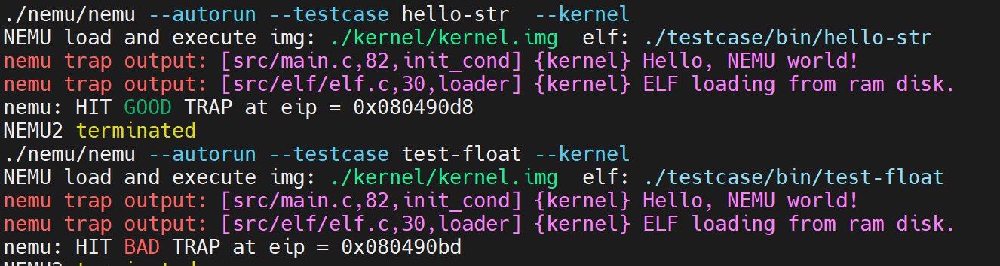

PA 3-2 保护模式（分段机制）——虚实交错的魔法
在之前的阶段中，NEMU始终工作在类似于“实模式”的状态下，简言之，就是程序直接通过物理地址访问主存。从本小节开始，我们开始让NEMU具备现代计算机的内存管理功能。

分段机制的实现
-
在
include/config.h头文件中添加宏定义IA32_SEG并make clean； -
在
CPU_STATE中添加对GDTR、CR0的模拟以及在init_cpu()中进行初始化为0； -
在
CPU_STATE中添加对6个段寄存器的模拟在init_cpu()中进行初始化为0，注意除了要模拟其16位的可见部分，还要模拟其隐藏部分，顺序不能有错； -
实现包括
lgdt、针对控制寄存器和段寄存器的特殊mov以及ljmp指令； -
实现
segment_translate()、loag_sreg()函数，并在vaddr_read()和vaddr_write()函数中添加保护模式下的虚拟地址向线性地址转换的过程；
在PA3各个阶段中，工程代码量偏小，理解十分重要。这也是x86模拟与RISC-V模拟PA任务的一个重要区别。
分段机制
当开启保护模式后，NEMU中运行的程序访在问内存时给出的就不简单是32位的物理地址了，而是由一个16位的段选择符加上32位的段内偏移量（有效地址）所构成的48位的逻辑地址（或称虚拟地址）。由于32位的段内偏移量是由程序直接给出，那唯一的问题就是如何通过16位的段选择符来获取32位的段基地址（base address）。在80386中，这一过程通过查表来实现。计算机与操作系统约定，若要开启保护模式，则操作系统需要事先在内存中准备好一个表，叫做“段表”，其中存储好每个段的首地址（base address）、段的长度（limit）等相关的信息。段表由一系列连续的段表项构成，其中每个段表项都是一个64位的数据结构称为段描述符，其结构如下：
DESCRIPTORS USED FOR APPLICATIONS CODE AND DATA SEGMENTS
31 23 15 7 0
+-----------------+-+-+-+-+---------+-+-----+-+-----+-+-----------------+
| | | | |A| | | | | | | |
| BASE 31..24 |G|X|O|V| LIMIT |P| DPL |1| TYPE|A| BASE 23..16 | 4
| | | | |L| 19..16 | | | | | | |
|-----------------+-+-+-+-+---------+-+-----+-+-----+-+-----------------|
| | |
| SEGMENT BASE 15..0 | SEGMENT LIMIT 15..0 | 0
| | |
+-----------------------------------+-----------------------------------+
A - ACCESSED
AVL - AVAILABLE FOR USE BY SYSTEMS PROGRAMMERS
DPL - DESCRIPTOR PRIVILEGE LEVEL
G - GRANULARITY
P - SEGMENT PRESENT
64位段描述符结构
于是整个段表就是多个段表项构成的一个数组：
+----------------+
| SEGMENT |
| DESCRIPTOR |
+----------------+
| SEGMENT |
| DESCRIPTOR |
+----------------+
| |
| |
| |
| ... |
| |
| |
+----------------+
| SEGMENT |
| DESCRIPTOR |
+----------------+
段表
在48位的逻辑地址中，包含了16位的段选择符，一个段选择符的结构如下：
15 3 2 0
+-------------------------+-+---+
| |T| |
| INDEX | |RPL|
| |I| |
+-------------------------+-+---+
TI - TABLE INDICATOR
RPL - REQUESTOR'S PRIVILEGE LEVEL
16位段选择符结构
如上图所示的段选择符存储在段寄存器的可见部分，由三个部分组成：高13位是一个index，用于指出所访问段的段描述符是段表中的第几项（数组下标）；TI用于指出选择哪一个段描述符表，TI为0时表示选择全局描述符表（GDT），TI为1时表示选择局部描述符表（LDT），在NEMU中，我们只关注GDT；最后RPL则与访问权限控制有关。
首先，我们需要先实现对GDTR、CR0的模拟。其中GDTR是全局描述符表寄存器，CR0是控制寄存器。
typedef struct{
uint32_t limit :16;
uint32_t base :32;
}GDTR;
#ifdef IA32_SEG
GDTR gdtr;
union {
SegReg segReg[6];
struct{
SegReg es, cs, ss, ds, fs, gs;
};
};
CR0 cr0;
#else
init_cpu()中进行初始化，对GDTR、CR0和6个段寄存器的可见部分进行初始化为0，也需要注意隐藏部分。
#ifdef IA32_SEG
cpu.cr0.val = 0x0;
cpu.gdtr.base = cpu.gdtr.limit = 0x0;
for (i = 0; i < 6; i++){
cpu.segReg[i].val = 0x0;
}
#endif
接下来，我们实现lgdt、针对控制寄存器和段寄存器的特殊mov以及ljmp指令。这些指令的实现请参考i386手册，这里不再赘述。
关于指令实现的一个小提示
我们在每次遇到指令需要实现时，都会放上这样一个小提示框。
我们在实现指令时，可以参考框架代码中提供的指令参考__ref_，或许大部分时间你觉得指令实现十分顺利，但是如果你遇到一些奇怪的问题时，这是一个十分重要的调试手段

通过我们引用的理论知识部分，实现segment_translate()是相对显而易见的：
uint32_t segment_translate(uint32_t offset, uint8_t sreg)
{
return cpu.segReg[sreg].base + offset;
}
在nemu/include/memory/mmu/segment.h中，我们定义了段描述符的结构体，其结构如下：
typedef union SegmentDescriptor {
struct
{
uint32_t limit_15_0 : 16;
uint32_t base_15_0 : 16;
uint32_t base_23_16 : 8;
uint32_t type : 4;
uint32_t segment_type : 1;
uint32_t privilege_level : 2;
uint32_t present : 1;
uint32_t limit_19_16 : 4;
uint32_t soft_use : 1;
uint32_t operation_size : 1;
uint32_t pad0 : 1;
uint32_t granularity : 1;
uint32_t base_31_24 : 8;
};
uint32_t val[2];
} SegDesc;
void load_sreg(uint8_t sreg)
{
SegDesc temp_seg;
assert(cpu.segReg[sreg].ti == 0);
if(cpu.segReg[sreg].ti == 0){
temp_seg.val[0] = laddr_read(cpu.gdtr.base + (cpu.segReg[sreg].index << 3), 4);
temp_seg.val[1] = laddr_read(cpu.gdtr.base + (cpu.segReg[sreg].index << 3) + 4, 4);
}else{
temp_seg.val[0] = laddr_read((cpu.segReg[sreg].index << 3), 4);
temp_seg.val[1] = laddr_read((cpu.segReg[sreg].index << 3) + 4, 4);
}
cpu.segReg[sreg].base = ((temp_seg.base_23_16 & 0xFF) << 16) + ((temp_seg.base_31_24 & 0xFF) << 24) + (temp_seg.base_15_0 & 0xFFFF);
cpu.segReg[sreg].limit = ((temp_seg.limit_19_16 & 0xF) << 16) + (temp_seg.limit_15_0 & 0xFFFF);
cpu.segReg[sreg].type = (temp_seg.segment_type << 4) + temp_seg.type;
cpu.segReg[sreg].privilege_level = temp_seg.privilege_level & 0x3;
cpu.segReg[sreg].soft_use = temp_seg.soft_use & 0x1;
assert(cpu.segReg[sreg].base == 0);
}
assert(cpu.segReg[sreg].ti == 0)总可以通过。而if-else语句则对处理LDT留下了空间，展示我们对于代码扩展性的关注与对i386的尊重。
在完成上述实现后，确保开启#define IA32_SEG并在工程目录下运行make test_pa-3-2，观察到如下结果：

这标志我们顺利通过了PA3-2的代码模拟部分。
思考习题
PA3-2-1
NEMU在什么时候进入了保护模式？
根据PPT内容，x86的机器开机后首先进入实模式加载操作系统，操作系统初始化段表，拨动一个“开关”，从实模式切换到保护模式（开启分段机制），且PPT中给出了kernel/start/start.S中的部分内容如下
start_cond:
# Set up the protected-mode data segment registers
movw $GDT_ENTRY(2), %ax
movw %ax, %ds # %DS = %AX
…
# Enable protection
movl %cr0, %eax # %CR0 |= PROTECT_ENABLE_BIT
orl $0x1, %eax
movl %eax, %cr0
PA3-2-2
在GDTR中保存的段表首地址是虚拟地址、线性地址、还是物理地址？为什么？
在GDTR（全局描述符表寄存器）中保存的段表首地址是线性地址。根据《计算机系统基础》第303-304页的内容，通过段选择符内13位索引值找到对应的段描述符；每个段描述符占8个字节，位移索引值乘以8加上描述符表首地址确定选中的段描述符的地址，从中取出32位基地址与逻辑地址中32位的段内偏移量相加得到32位线性地址。因此可以推知在GDTR（全局描述符表寄存器）中保存的段表首地址是线性地址。
PA3-2的特殊性
在PA3-2中，我们实现了对分段机制的模拟，但是并没有实现分页机制。这导致了一个很显著的差异——现阶段线性地址就等于物理地址（physical address）。因此，在PA3-2中，将laddr_read和laddr_write的函数调用改为paddr_read和paddr_write也可以通过测试，但这是不对的，并会在PA3-3中导致段错误。
PA-3-2阶段结束
厚重中显出轻灵，执着中显出超脱，命运的铁的法则中显出恍恍惚惚的朦胧。——王蒙《<红楼梦>启示录》